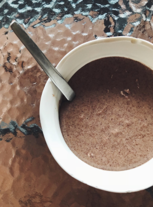

Food Photos
Card 1

| Raw Ugandan Groundnuts |
Card 2
| Groundnut Powder (with a little oil added to make it a paste) — Purchased from a nearby local market |
Card 4
| Powdered groundnut mixed in with oil to give a more pasty texture |
Card 5

| Step 9: Once the sauce has been cooked, you will find that the groundnut oil will have separated and risen to the top. |
Card 6
| Final Product! |